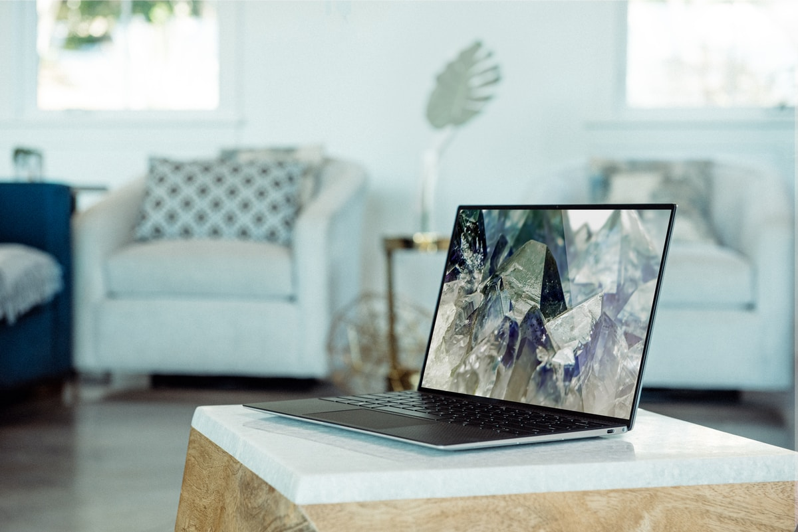

Мои работы

altermono.com
Последние новости и обзоры о компьютерной и информационной технологии. Здесь представлены статьи о новых продуктах, обновлениях операционных систем, секретах безопасности и полезных советах по использованию компьютеров. Этот сайт является незаменимым источником информации для всех тех, кто интересуется миром компьютерной техники.
codedoco.com
Сайт, предназначенный для веб-дизайнеров и разработчиков. Здесь можно найти полезные статьи о последних трендах в дизайне, обучающие материалы о языках программирования и создании пользовательского интерфейса. Сайт также предлагает шаблоны для веб-сайтов, ресурсы для дизайна и фотографии высокого разрешения.